The 12th grade P-Seminar "What makes me happy" explored this question. Therefore, students from the R5d as well as from the partner school in Eikwe,
where asked to draw their happy moments.
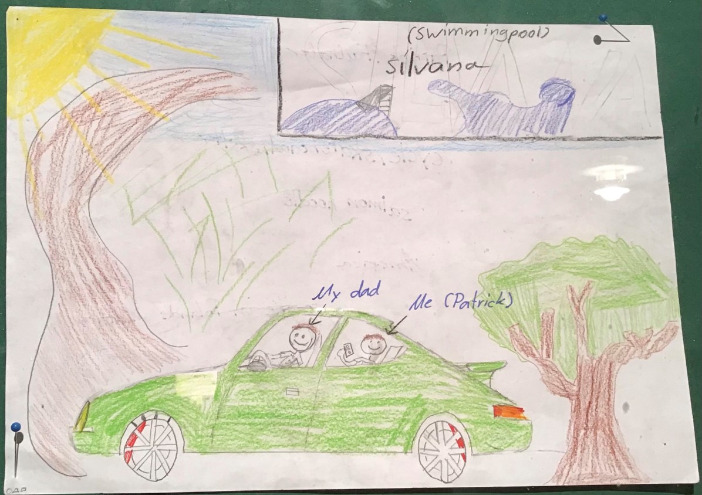
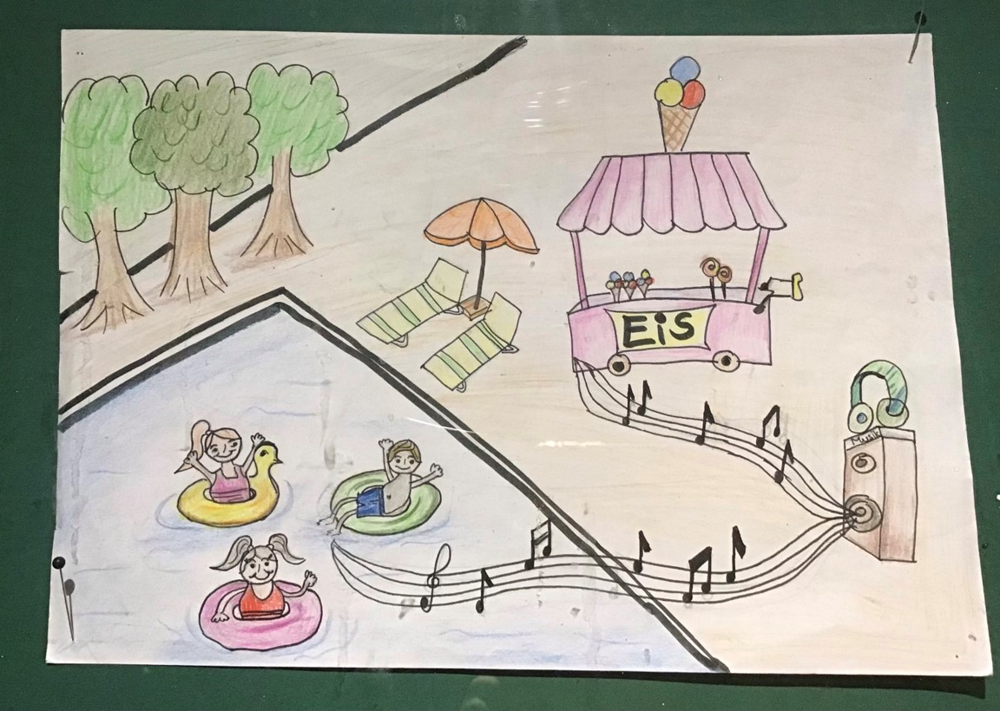
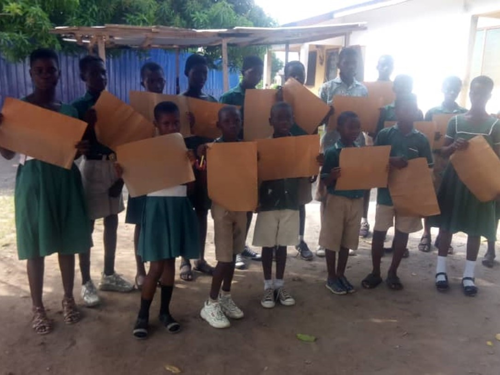
The best pictures
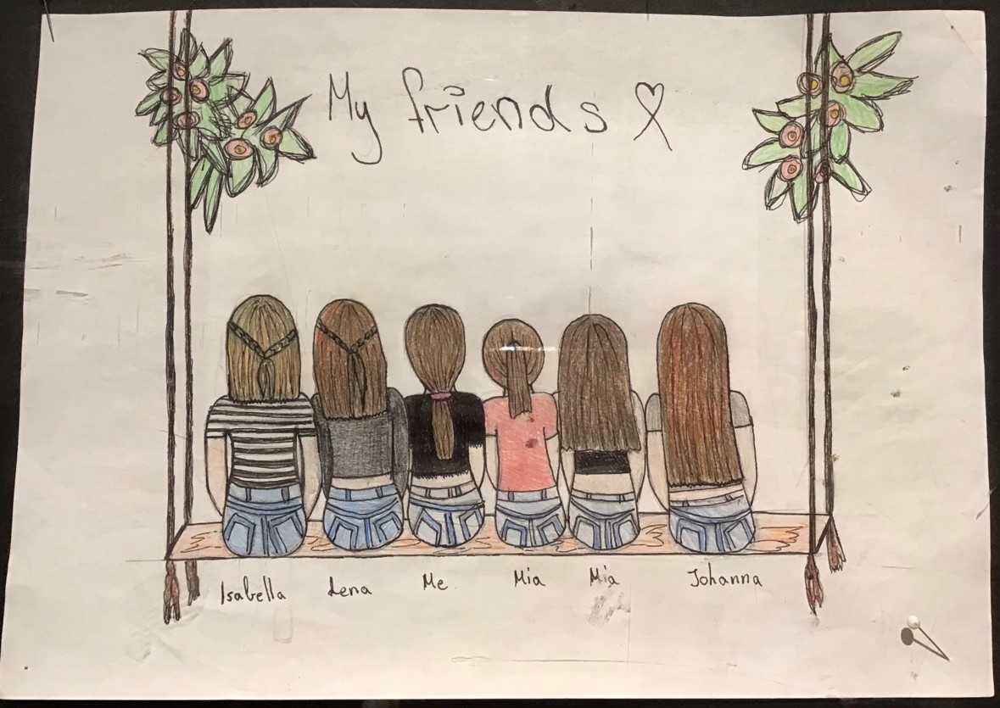
Sophie drew her friends, because she's happy spending time with them.
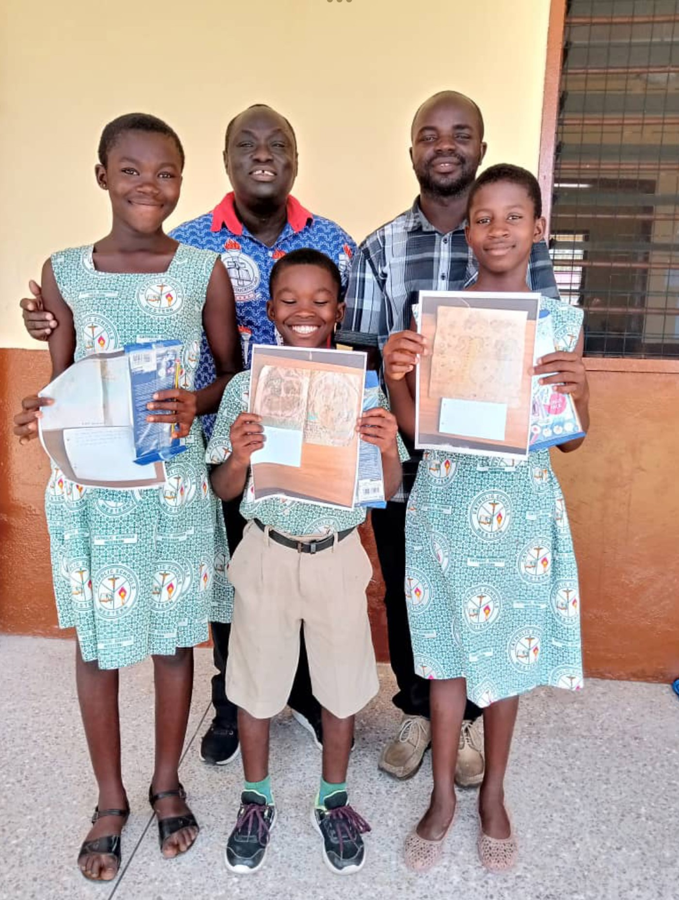
Lucy drew a beach and a boat with the inscription "peace & love". The meaning behind the picture is impressive as it relates to the current global situation: It demonstrates the importance of contemplating peace and love.
Isabella depicted all the areas of her life that bring her happiness: her hobbies, family, friends, and also good grades.
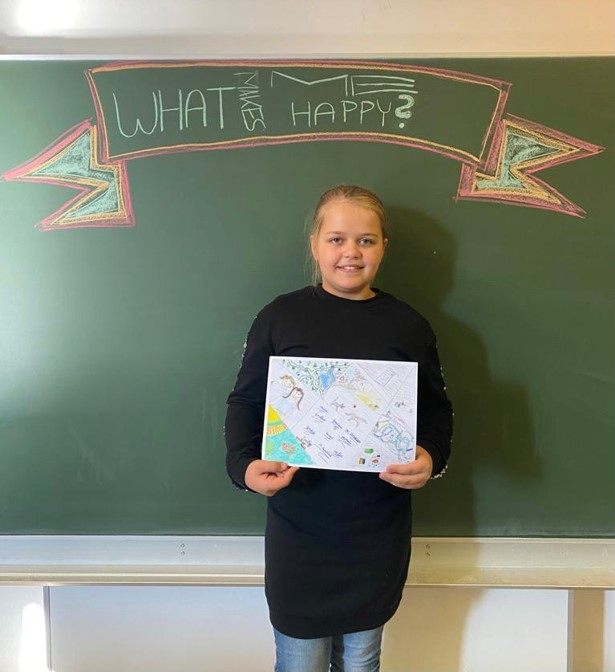
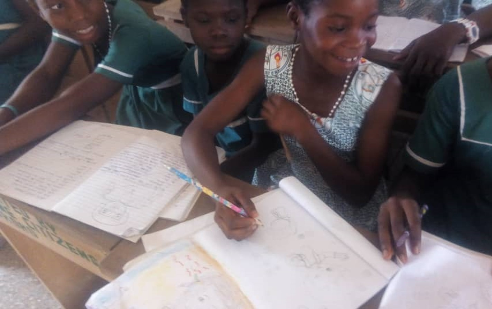
Anabel drew herself and her friend in colorful clothes.
 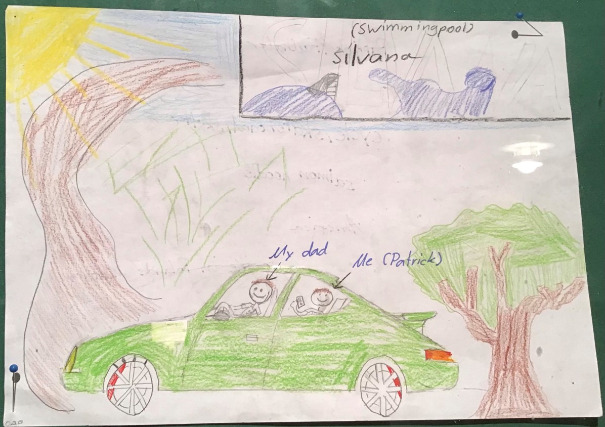
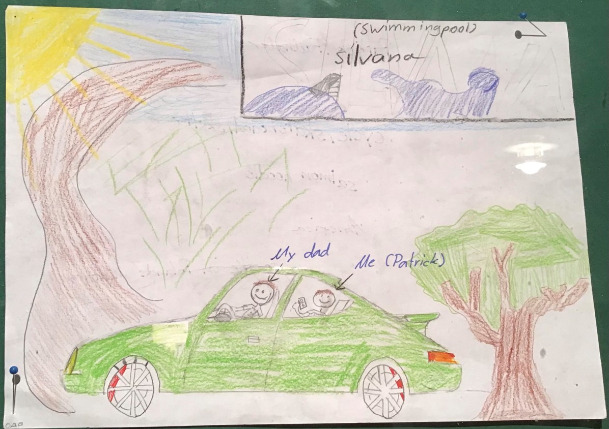
 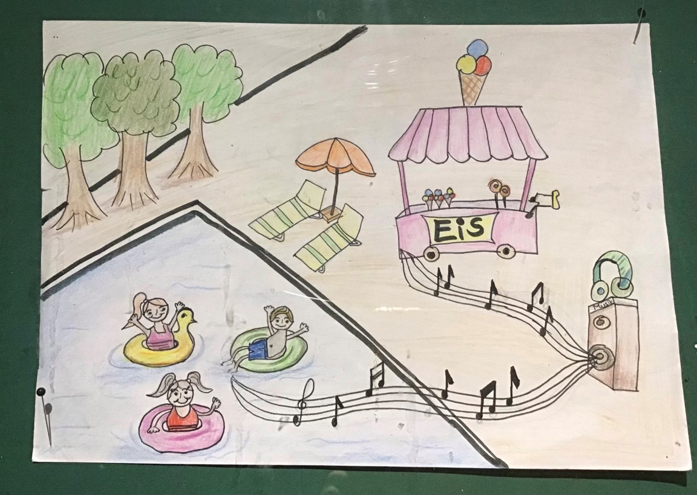
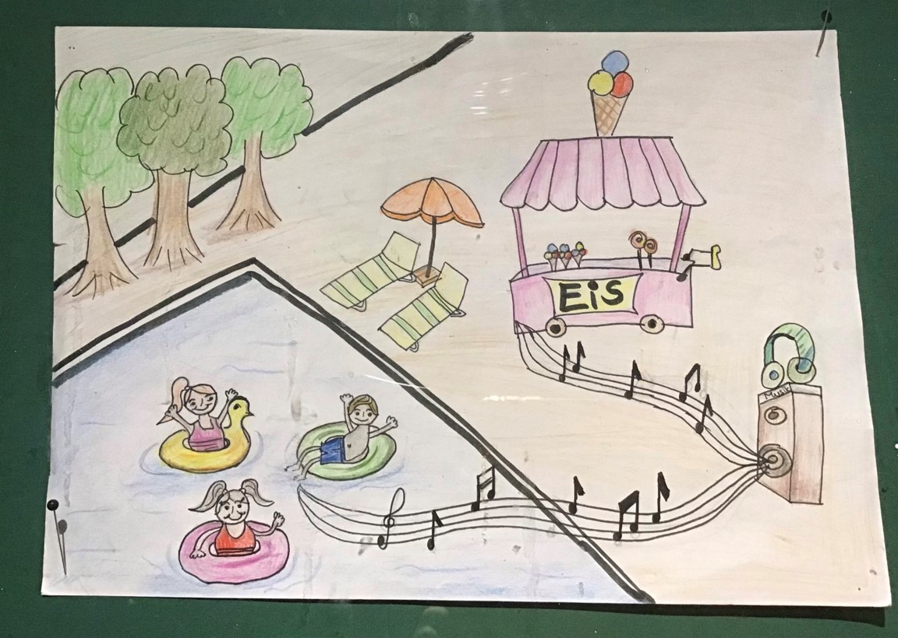 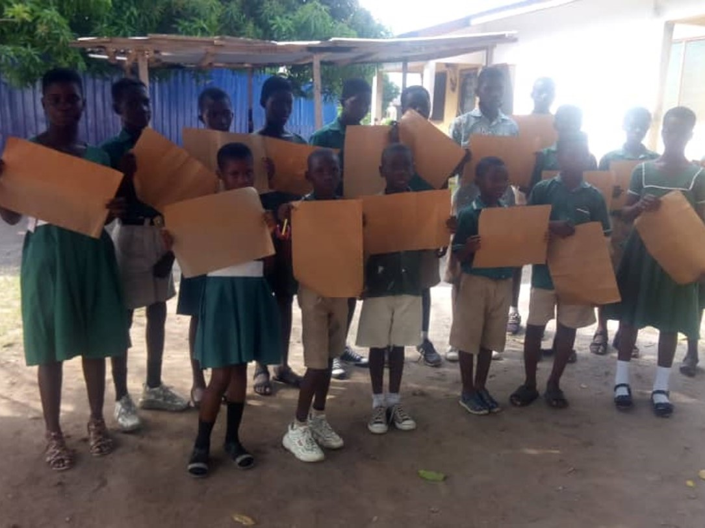
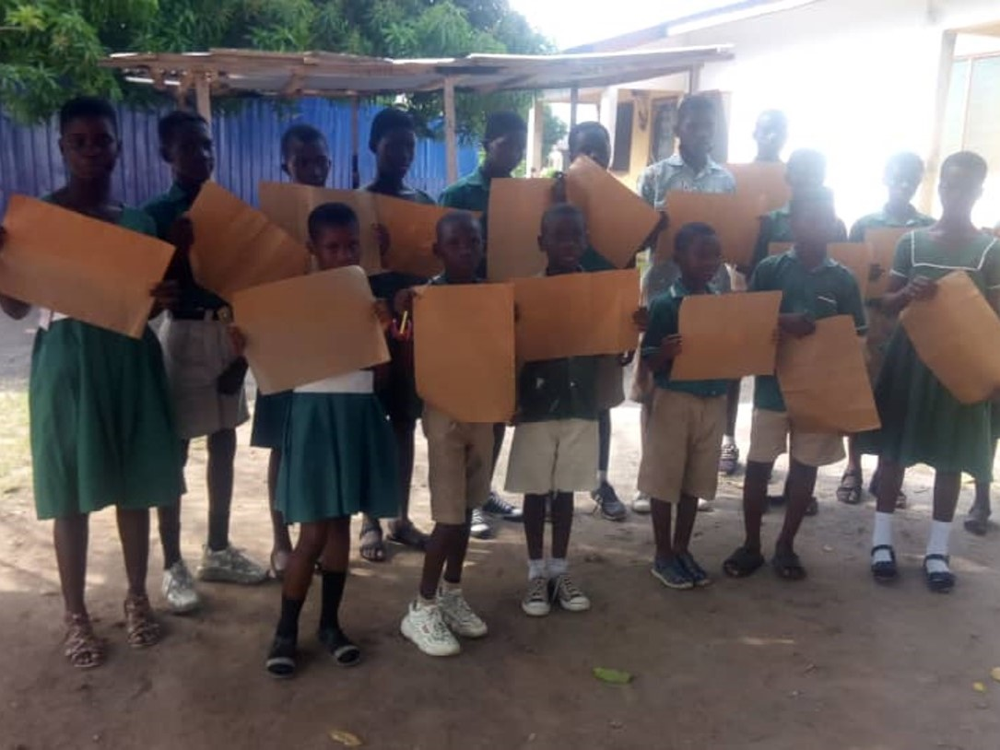